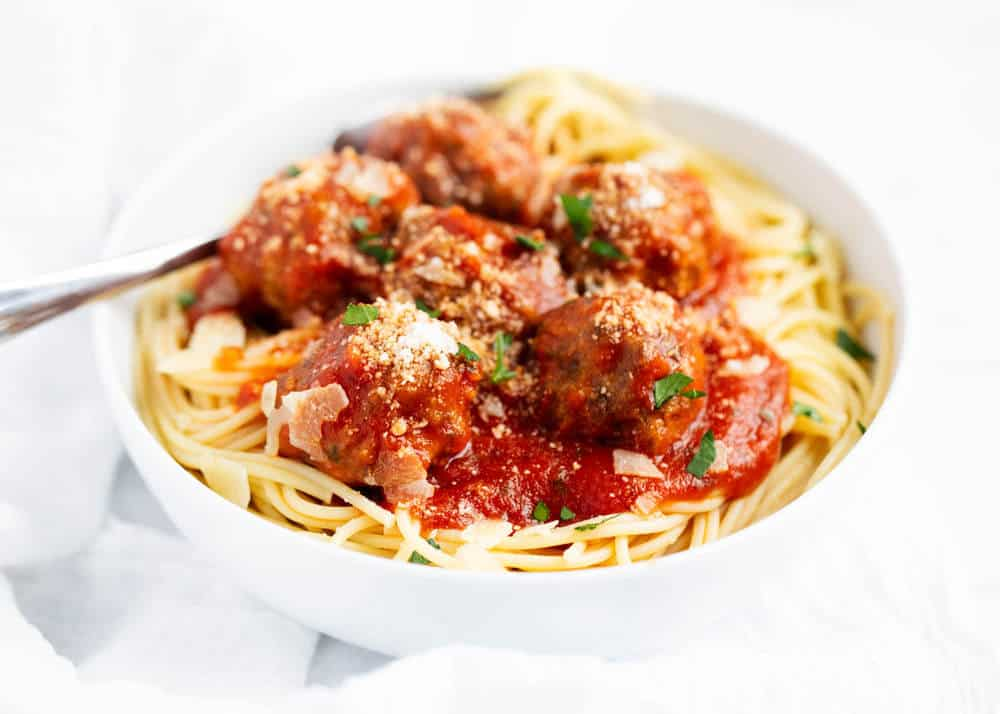

Meatballs

Spaghetti and Meatballs is one of the most common italian dishes in America. Below are a few simple steps to make meatballs
Ingredients
- Parsley
- Garlic
- Salt and pepper
- Ground beef
- Marinara
- Egg
- Parmesan cheese
- Breadcrumbs
- Onion
Steps
- Combine: Place all ingredients in a large bowl and stir until combined. If needed, add a Tablespoon of milk to keep mixture wet
- Shape: Scoop the meat from the bowl and form into 1 1/2″ balls. Then place meatballs on baking sheet
- Bake: Place onto prepared baking sheet and bake meatballs uncovered for 17-20 minutes, or until middle is no longer pink. Flip halfway through
- Simmer: If desired, simmer with marinara sauce for 10 minutes and serve over cooked pasta